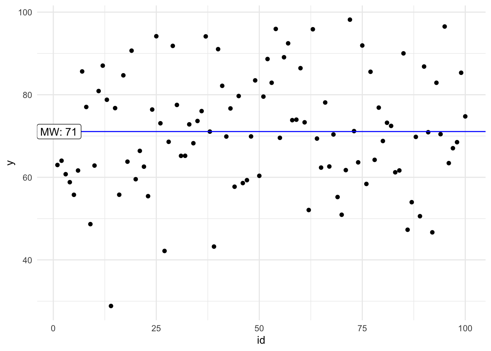
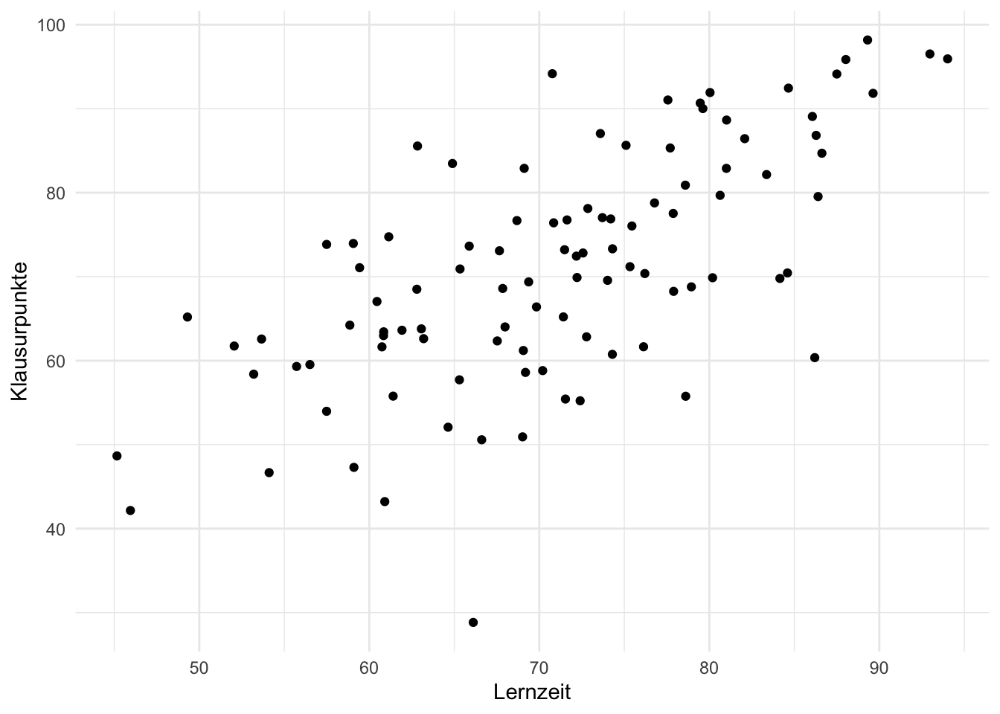
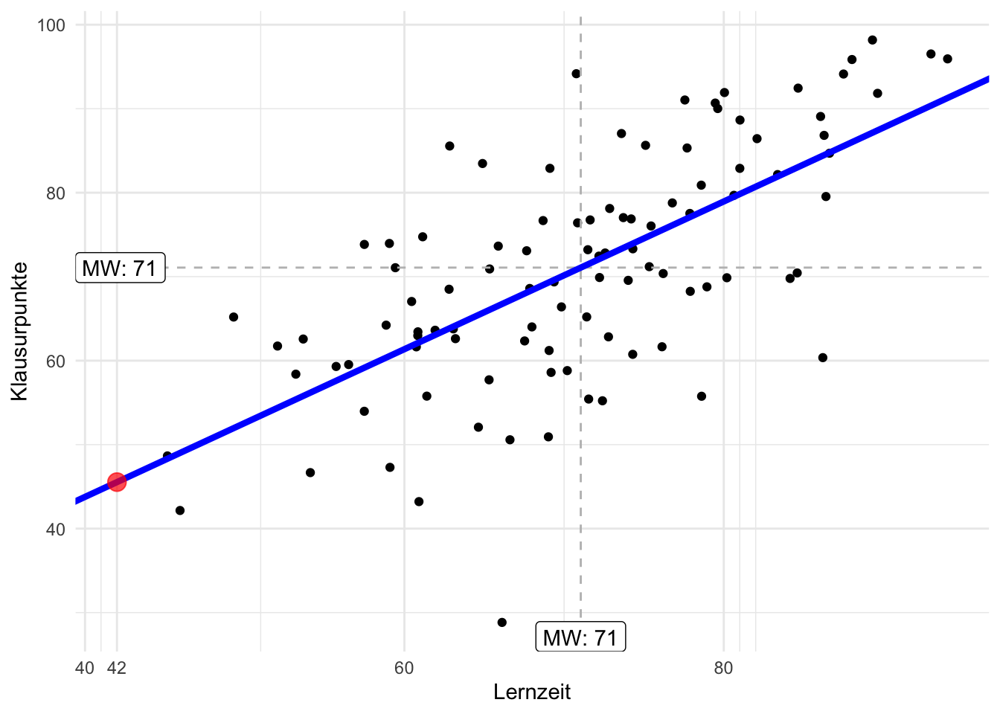
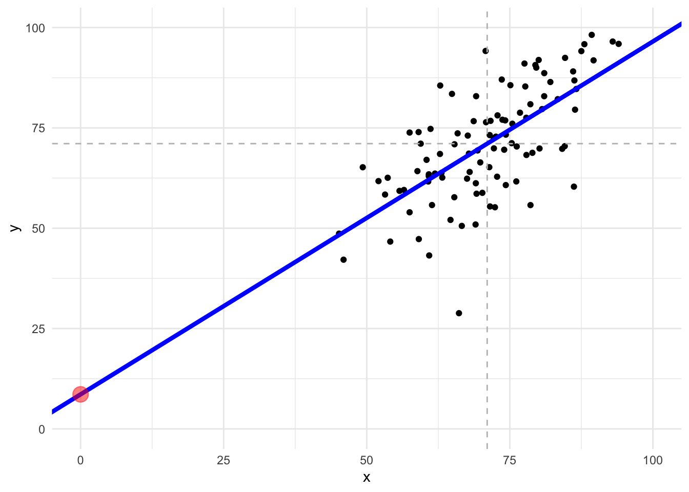
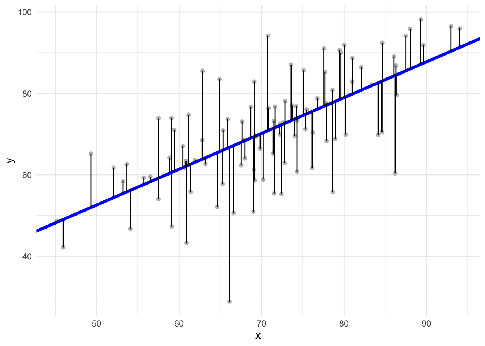
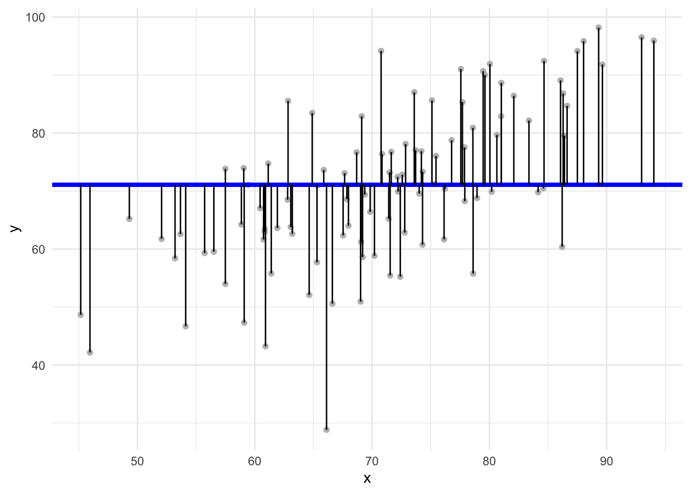
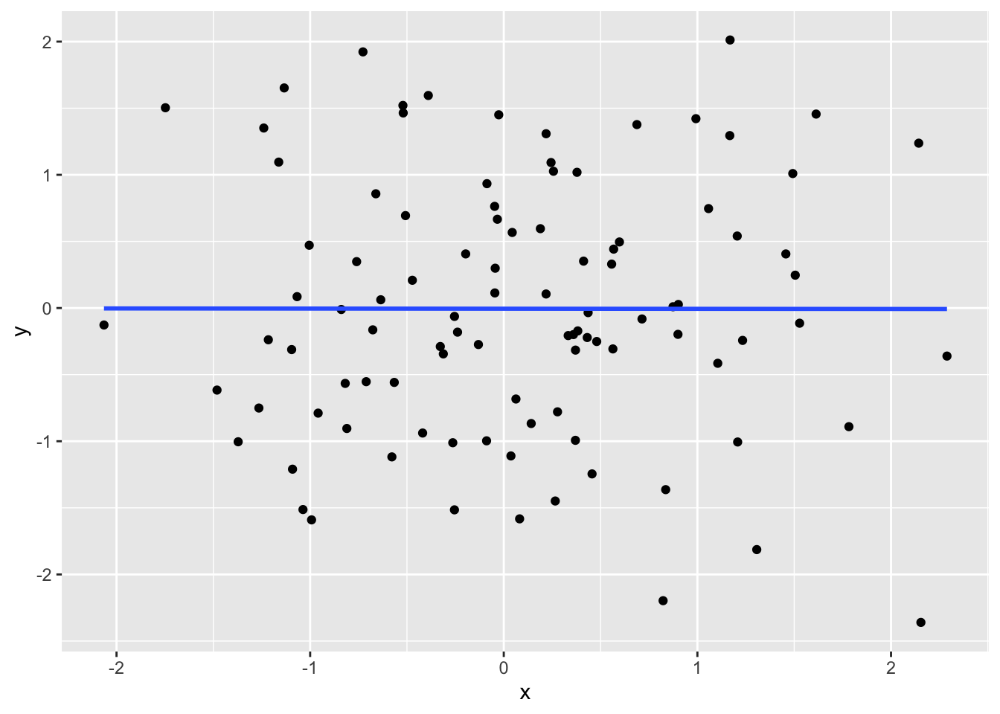
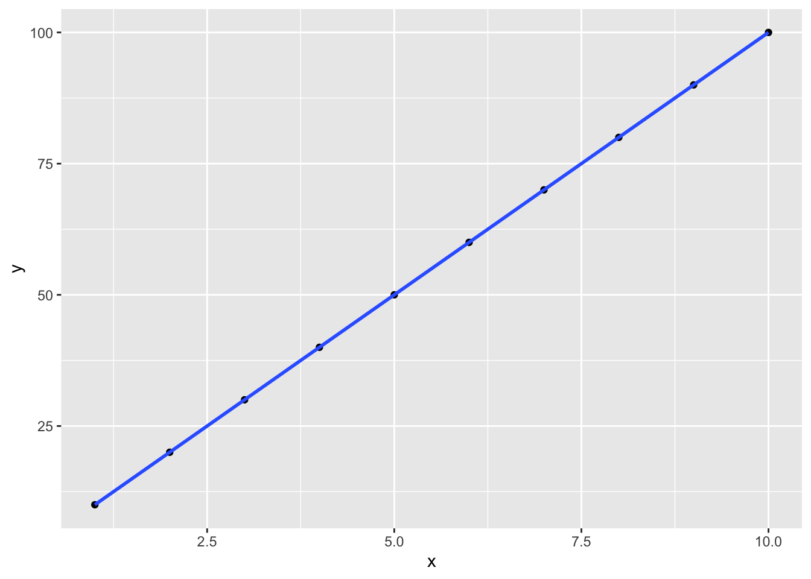
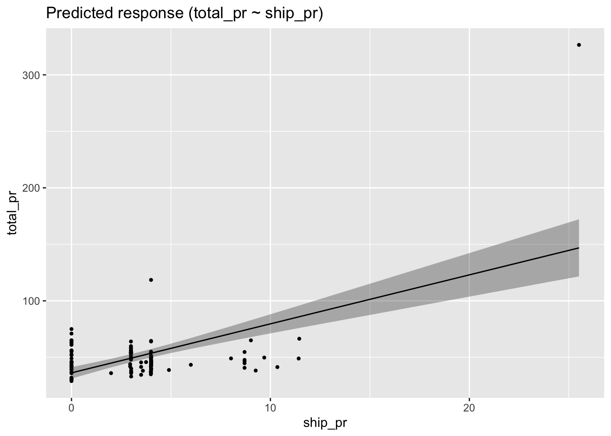

9 Geradenmodelle 1
9.1 Lernsteuerung
9.1.1 Standort im Lernpfad
Abb. Abbildung 1.2 zeigt den Standort dieses Kapitels im Lernpfad und gibt damit einen Überblick über das Thema dieses Kapitels im Kontext aller Kapitel.
9.1.2 Lernziele
- Sie können ein Punktmodell von einem Geradenmodell begrifflich unterscheiden.
- Sie können die Bestandteile eines Geradenmodells aufzählen und erläutern.
- Sie können die Güte eines Geradenmodells anhand von Kennzahlen bestimmen.
- Sie können Geradenmodelle sowie ihre Modellgüte in R berechnen.
9.1.3 Benötigte R-Pakete
9.2 Vorhersagen
Vorhersagen sind eine nützlich Sache, unter (mindestens) folgenden Voraussetzungen:
- Sie sind präzise
- Wir kennen die Präzision
- Jemand interessiert sich für die Vorhersage
Die Methode des Vorhersagens, die wir hier betrachten, nennt man auch lineare Regression.
9.2.1 Vorhersagen ohne Prädiktor
Beispiel 9.1 Nach intensiver Beschäftigung mit Statistik sind Sie allgemein als Checker bekannt. Viele jüngere Studentis fragen Sie um Rat. eines Tages kommt ei Studenti, Toni, und fragt: “Welche Statistiknote kann ich in der Klausur erwarten?” Sie entgegnen: “Wie viel hast du denn gelernt?”. Die Antwort: “Sag ich nicht.”
Nach kurzem Überlegen geben sie den Notenschnitt der letzten Klausur als Prognose für dis Studenti. Dazu rechnen Sie schnell den Notenschnitt (Mittelwert aus).
Zuerst importieren Sie die Daten der letzten Klausur1:
noten2 <- read.csv("daten/noten2.csv")Dann rechnen Sie den Mittelwert aus:
Ihre Antwort lautet also: “Im Schnitt haben die Studis bei der letzten Klausur gut 50% der Punkte erzielt. Diesen Wert kannst du erwarten. Solange ich keine genaueren Infos habe, z.B. wieviel du gelernt hast, kann ich dir keine genauere Vorherage machen, sorry!”\(\square\)
Ohne Kenntnis eines Prädiktors (UV) (wie z.B. Lernzeit) ist der Mittelwert ein geeigneter Vorhersagewert für jede Beobachtung, s. Abbildung 9.1. Wir nutzen den Mittelwert als Punktmodell für den Klausurerfolg.\(\square\)

9.2.2 Nullmodell
Modelle ohne Prädiktor, Punktmodelle also, kann man so bezeichnen: y ~ 1. Da es null Prädiktoren hat, nennt man es auch manchmal “Nullmodell”.
Auf Errisch kann man dieses Nullmodell so spezifizieren:
lm0 <- lm(y ~ 1, data = noten2)
lm0
##
## Call:
## lm(formula = y ~ 1, data = noten2)
##
## Coefficients:
## (Intercept)
## 71.08lm steht für “lineares Modell”, die 0 sagt, dass es keine Prädiktoren gibt. In dem Fall wird der Mittelwert als Gerade verwendet. Der zurückgemeldete Koeffizient (Intercept) ist hier der Modell des Punktmodells. Da es ein Punktmodell ist, sagt es für alle Beobachtungen (hier Studentis) den gleichen Wert vorher.
9.2.3 Vorhersagen mit Prädiktor
Beispiel 9.2 (Toni verrät die Lernzeit) Dis Studenti, Toni, entschließt sich dann doch noch, die Lernzeit zu verraten: “Okay, also ich hab insgesamt 42 Stunden gelernt, insgesamt.” Jetzt müssen Sie erstmal nachdenken: “Wie viele Klausurpunkte sag ich vorher, wenn Toni 42 gelernt hat?”
Sie visualisieren sich zur Hilfe die vorliegenden Daten, s. Abbildung 9.2, links.
noten2 <- read.csv(noten2, "daten/noten2.csv")
library(DataExplorer)
noten2 %>%
plot_scatterplot(by = "y") # Y-Variable muss angegeben werdenAuf dieser Basis antworten Sie Toni: “Bei 42 Stunden Lernzeit solltest du so 40% Punkte bekommen. Könnte mit dem Bestehen eng werden.” Toni ist nicht begeistert von Ihrer Prognose und zieht von dannen.\(\square\)
Der Trend (im Sinne eines linearen Zusammenhangs) von Lernzeiten und Klausurpunkte ist deutlich zu erkennen. Mit einem Lineal könnte man eine entsprechende Gerade in das Streudiagramm einzeichnen, s. Abbildung 9.2.


Eine Gerade eignet sich, um einen linearen Trend zusammenzufassen.
9.3 Geradenmodelle
9.3.1 Achsenabschnitt und Steigung definieren eine Gerade
Wir verwenden eine Gerade als Modell für die Daten, s. Abbildung 9.2, rechts. Anders gesagt: Wir modellieren die X-Y-Daten (bzw. ihren Zusammenhang) mit einem Geradenmodell.
Ein Geradenmodell ist eine Verallgemeinerung des Punktmodells: Ein Punktmodell sagt für alle Beobachtungen den gleichen Wert vorher. Abbildung 9.1 und Abbildung 9.2 stellen ein Punktmodell einem Geradenmodell gegenüber.
In einem Geradenmodell wird nicht mehr (notwendig) für jede Beobachtung die gleiche Vorhersage \(\hat{y}\) gemacht (wie das bei einem Punktmodell der Fall ist).
Definition 9.1 Eine Gerade ist definiert durch zwei Koeffizienten: Achsenabschnitt (engl. intercept), und Steigung (engl. slope). Häufig wird (z.B. im Schulunterricht) der Achsenabschnitt mit \(t\) und die Steigung mit \(m\) bezeichnet: \(f(x)=y=\color{blue}[m]x + \color{red}[t]\). In der Statistik wird folgende Nomenklatur bevorzugt: \(f(x)=\hat{y} = \color{red}{b_0} + \color{blue}{b_1}x\) oder \(y = \color{red}{\beta_0} + \color{blue}{\beta_1}x\) .2
Abbildung 9.3 skizziert die Elemente einer Regression.

Basierend auf diesem Diagramm von Henri Menke
Beispiel 9.3 (Toni will es genau wissen) Da Toni Sie als Statistik-Profi abgespeichert hat, werden Sie wieder konsultiert. “Okay, ich hab noch zwei Fragen. Erstens: Wie viele Punkte bekomme ich, wenn ich gar nicht lerne? Zweitens, wie viele Punkte bekomme ich pro gelernte Stunde? Ist immerhin meine Lebenszeit, krieg ich nicht zurück!”
Das sind gute Fragen. Den Y-Wert (Klausurpunkte) bei \(X=0\) gibt der Achsenabschnitt zurück. Schnell skizzieren Sie dazu ein Diagramm, s. Abbildung 9.4. Puh, die Antwort wird Toni nicht gefallen …

9.3.2 Spezifikation eines Geradenmodells
Ein Geradenmodell kann man im einfachsten Fall so spezifizieren, s. Gleichung 9.1:
\[\hat{y} \sim x \tag{9.1}\]
Lies: “Laut meinem Modell ist \(\hat{y}\) irgendeine Funktion von \(y\)”. Wir werden als Funktion (erstmal) nur Geraden verwenden. Die genauen Werte der Gerade lassen wir uns (erstmal) vom Computer ausrechnen.
Gleichung 9.1 können Sie so ins Errische übersetzen:
lm(y ~ x, data = meine_daten)lm steht für “lineares Modell”, also eine Gerade als Modell. Die Gerade nennt man auch Regressionsgerade3.
Beispiel 9.4 (Zahlen für Toni) Toni ist nicht zufrieden mit Ihren Vorhersagen: “Jetzt hör mal auf mit deinem Lineal hier herum zu malen. Ich will es genau wissen, sag mir präzise Zahlen!”.
lm1 <- lm(y ~ x, data = noten2)
lm1
##
## Call:
## lm(formula = y ~ x, data = noten2)
##
## Coefficients:
## (Intercept) x
## 8.6030 0.8794R gibt Ihnen die beiden Koeffizienten für die Gerade aus. Den Namen des Objekts können Sie frei aussuchen, z.B. mein_erstes_lm.
Mit Kenntnis der beiden Koeffizienten kann man beliebige Y-Werte ausrechnen gegeben bestimmte X-Werte.
Beispiel 9.5 (Vorhersage für Klausurerfolg, nächster Versuch) Sie versuchen, noch etwas Gutes für Toni zu tun. R hilft Ihnen dabei und rechnet die erwartete Punktzahl aus, wenn Toni 73 Stunden lernt.
Die Syntax von predict lautet:
predict(name_des_objekts, newdata = tabelle_mit_prädiktorwerten)9.3.3 Vorhersagefehler
Die Differenz zwischen vorhergesagten Wert für eine (neue) Beobachtung, \(\hat{y_0}\) und ihrem tatsächlichen Wert nennt man Vorhersagefehler (error, \(e_i\)) oder Residuum: \(e_i = y_i - \hat{y}_i\).


Wie ist es mit den Vorhersagefehlern von beiden Modellen bestellt?
Lassen wir uns von R die Streuung (Residuen) in Form der mittleren Absolutabweichung (MAE) ausgeben4:
mae(lm0)
## [1] 11.18385
mae(lm1)
## [1] 7.954085Vergleichen wir MAE im Nullmodell mit MAE in lm1:
verhaeltnis_fehler_gerade_zu_punkt_mae <- mae(lm1) / mae(lm0)
verhaeltnis_fehler_gerade_zu_punkt_mae
## [1] 0.7112118Ah! Das Geradenmodell ist viel besser: Von lm0 zu lm1 haben die mittlere (Absolut-)Länge des Fehlerbalkens auf 71 Prozent verbessert. Nicht schlecht!
Ein Geradenmodell ist immer besser als ein Punktmodell, solange X mit Y korreliert ist.\(\square\)
Natürlich können wir - in Analogie zur Varianz - auch den mittleren Quadratfehlerbalken (Mean Squared Error, MSE) berechnen5.
mse(lm0)
## [1] 192.7863
mse(lm1)
## [1] 106.4519verhaeltnis_fehler_gerade_zu_punkt_mse <- mse(lm1)/mse(lm0)
verhaeltnis_fehler_gerade_zu_punkt_mse
## [1] 0.55217559.3.4 Berechnung der Modellkoeffizienten
Aber wie legt man die Regressionsgerade in das Streudiagramm, bildlich gesprochen?
Die Regressionskoeffizienten b0 und b1 wählt man so, dass die Residuen minimal sind. Es gibt verschiedene Algorithmen, um dies zu berechnen. Eine schöne Darstellung dazu findet sich bei Kaplan (2009).
“Von Hand” können Sie die Optimierung von b0 und b1 in dieser App der FOM-Hochschule ausprobieren.
9.4 R-Quadrat
9.4.1 R-Quadrat als Verringerung der Fehlerstreuung
Anders gesagt, wir haben uns um \(1 - 0.55\) verbessert:
1 - verhaeltnis_fehler_gerade_zu_punkt
## [1] 0.4478245Die Verbesserung (als Anteil) von lm0 zum gerade untersuchten Modell nennt man auch R-Quadrat (\(R^2\)).
Wir können es uns von R z.B. so ausgeben lassen:
r2(lm1)
## # R2 for Linear Regression
## R2: 0.448
## adj. R2: 0.442Definition 9.2 (R-Quadrat) R-Quadrat eines Modells \(m\) ist definiert als die Verringerung der Streuung, wenn man das Modell \(m\) mit dem Nullmodell \(m_0\) vergleicht: \(R^2 =1- \frac{\text{MSE}_{m}}{\text{MSE}_{m0}}\). R-Quadrat ist ein Maß der Modellgüte: Je größer, desto besser die Vorhersage. Da es ein Anteilsmaß6 ist, liegt der Wertebereich zwischen 0 uns 1. Im Nullmodell liegt R-Quadrat per Definition bei 0. Im Fall von Modellen des Typs \(y\sim x\) gilt: \(R^2 = r_{xy}^2\). \(\square\)
Bei einer perfekten Korrelation ist \(r=1\), daher ist dann auch \(R^2 = 1\)7, s. Abbildung 9.6.


Bei einer perfekten Korrelation \(R^2=1\) liegen die Punkte auf der Geraden. Im gegenteiligen Extremfall von \(R^2=0\) ist die Vorhersage genauso gut, wie wenn man für jedes \(y_\) den Mittelwert, \(\bar{y}\), vorhersagen würde.
Diese App der FOM-Hochschule erlaubt es Ihnen mit der Größe der Residuen eines linearen Modells zu spielen.
9.4.2 Addition der Varianzen
Nennen wir die Varianz des Verkaufspreis \(s^2_y\), die Verbesserung der Fehlerstreuung durch das Modell \(s^2_m\) und die restliche Fehlerstreuung, den MSE, \(s^2_e\). Dann gilt:
\[s^2_y = s^2_m + s^2_e \\ s^2_m = s^2_y - s^2_e\]
s2_y = var(noten2$y)
s2_e = mse(lm1)
s2_m = s2_y - s2_e
s2_m
## [1] 88.28178Die Varianzanteile addieren sich. Mit anderen Kennzahlen der Streuung (SD, MAE) funktioniert das nicht.
9.5 Interpretation des Modells
9.5.1 Modellgüte
Die Residuen bestimmen die Modellgüte. Verschiedenen Koeffizienten stehen hier zur Verfügung: R-Quadrat, r^[als Korrelation von tatsächlichem \(y\) und vorhergesaten $, MSE, RMSE, MAE, …
9.5.2 Koeffizienten
Die Modellkoeffizienten, also Achsenabschnitt (\(b_0\)) und Steigung (\(b_1\)) sind nur eingeschränkt zu interpretieren, wenn man die zugrundeliegenden kausalen Abhängigkeiten nicht kennt. Nur aufgrund eines Zusammenhangs darf man keine kausalen Abhängigkeiten annehmen. Ohne eine guten Grund für eine Kausalbehauptung kann man kann nur deskriptiv argumentieren. Oder sich mit der Modellgüte und den Vorhersagen begnügen. Was auch was wert ist.
9.5.2.1 Achsenabschnitt (b0)
“Im Modell lm1 liegt der Achsenabschnitt bei \(y=8.6\). Beobachtungen mit \(x=0\) können also diesen Y-Wert erwarten.” Leider ist es häufig so, dass Prädiktorwerte von 0 in der Praxis nicht realistisch sind, so dass der Achsenabschnitt dann wenig nützt.
Beispiel 9.6 (Regression Größe und Gewicht) Nutzt man Körpergröße umd das Gewicht von Menschen vorherzusagen, ist der Achsenabschnitt von Körpergröße wenig nützlich, da es keine Menschen gibt der Größe 0.\(\square\)
9.5.2.2 Geradensteigung (b1)
“Im Modell lm1 beträgt der Regressionskoeffizient b1 \(0.88\). Zwei Studenti, deren Lernzeit sich um eine Stunde unterscheidet, unterscheiden sich als laut Modell um den Wert von b1.”
Häufig liest man, der “Effekt des Prädiktors” auf die AV betrage z.B. \(0.88\). “Effekt” ist aber ein Wort, dass man kausal verstehen kann. Ohne weitere Absicherung kann man aber Regressionskoeffizienten nicht kausal verstehen. Daher sollte man das Wort “Effekt” mit Vorsicht genießen. Manche sprechen daher auch von einem “statistischen Effekt”.\(\square\).
9.6 Fallbeispiel
Als mittlerweile anerkannter Extrem-Datenanalyst in dem Online-Auktionshaus, in dem Sie arbeiten, haben Sie sich neue Ziele gesetzt. Sie möchten eine genaue Vorhersage von Verkaufspreisen erzielen. Als Sie von diesem Plan berichteten, leuchteten die Augen Ihres Chefs. Genaue Vorhersagen, das ist etwas von hoher betriebswirtschaftlicher Relevanz. Auf geht’s!
Daten laden:8
mariokart <- read.csv("https://vincentarelbundock.github.io/Rdatasets/csv/openintro/mariokart.csv")lm2 <- lm(total_pr ~ start_pr, data = mariokart)
r2(lm2)
## # R2 for Linear Regression
## R2: 0.005
## adj. R2: -0.002Oh nein! Unterirdisch schlecht. Anstelle von bloßen Rumprobieren überlegen Sie und schauen dann in Abbildung 8.8 nach, welche Variable am stärksten korreliert mit total_pr, es resultiert lm3:
lm3 <- lm(total_pr ~ ship_pr, data = mariokart)Der Achsenabschnitt liegt bei ca. 36 Euro: Ein Spiel, das mit Null Euro Preis startet, kann laut lm3 etwa 36 Euro finaler Verkaufspreis erwarten. Pro Euro an Versandkosten (ship_pr) steigt der zu erwartende finale Verkaufspreis um ca. 4 Euro.9.
Man kann sich die erwarteten Werte (“expectations”) des Verkaufspreises in Abhängigkeit vom Wert der UV (ship_pr) auch schätzen (“to estimate”) lassen, und zwar so10:
Ah, bei 4 Euro Versandkosten ist laut dem Modell knapp 54 Euro Verkaufspreis zu erwarten, fassen Sie sich die Ausgabe zusammen.
Aber nützlich wäre noch, das Modell (bzw. die Schätzung der erwarteten Werte) als Diagramm zu bekommen. Das erreicht man z.B. so, s. Abbildung 10.6.

Am wichtigsten ist Ihnen aber im Moment die Frage, wie “gut” das Modell ist, spricht wie lang oder kurz die Vorhersagefehler-Balken sind:
mae(lm3)
## [1] 13.0632Das Modell erklärt einen Anteil von ca. 0.29 der Gesamtstreuung.
mae(lm3)
## [1] 13.0632Im nächsten Meeting erzählen Sie Ihrem Chef “Ich kann den Verkaufspreis von Mariokart-Spielen im Schnitt auf 13 Dollar genau vorhersagen!”. Hört sich gut an. Allerdings hätte ihr Chef es gerne genauer. Kann man da noch was machen?
9.7 Fazit
9.8 Aufgaben
9.9 Literatur
Diese Syntax wird bei Ihnen nur funktionieren, wenn auf Ihrem Computer dieser Ordner mit dieser Datei existiert. Andernfalls müssen Sie die Daten erst herunterladen: https://raw.githubusercontent.com/sebastiansauer/statistik1/main/daten/noten.csv.↩︎
Die Nomenklatur mit \(b_0, b_1\) hat den Vorteil, dass man das Modell einfach erweitern kann: \(b_2, b_3, ...\). Anstelle von \(b\) liest man auch oft \(\beta\). Griechische Buchstaben werden meist verwendet, um zu zeigen, dass man an einer Aussage über eine Population, nicht nur über eine Stichprobe, machen möchte.↩︎
an anderer Stelle in diesem Buch unscharf als “Trendgerade” bezeichnet.↩︎
aus dem Paket
easystats↩︎Wer mag, kann den MSE auch von Hand berechnen:
mean((noten2$y-mean(noten2$y))^2)↩︎Prozentzahl↩︎
Bei Modellen mit einem Prädiktor; gibt es mehrere Prädiktoren gilt die Beziehung nur wenn die Prädiktoren alle paarweise unabhängig sind.↩︎
Und die üblichen Pakete starten, nicht vergessen.↩︎
Die Spalte
95 CIgibt einen Schätzbereich für den jeweiligen Modellkoeffizienten an, denn es handelt sich bei den Koeffizienten um Schätzwerte; der wahre Wert in der Population ist unbekannt. Wir kennen schließlich nur eine Stichprobe der Größe \(n=143\).↩︎Die Funktion stammt aus easystats↩︎